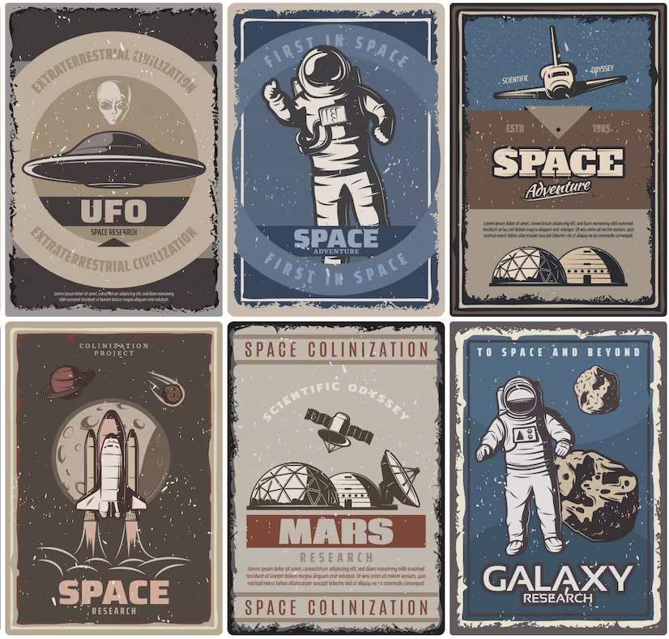

UFO find
О нас
Описание
Контакты
Добро Пожаловать!
Это приложение UFO Find, созданное командой Exception 402
Оно поможет найти вам вашего коллегу в большом в офисе

Что для этого нужно?
Вам нужно иметь на своём устройстве компас и включенный Bluetooth
Введите своё имя и UFO Find покажет вам путь до нужного вам человека